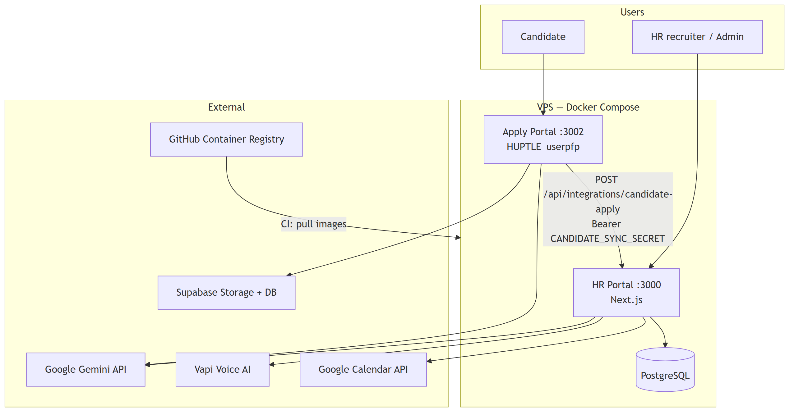
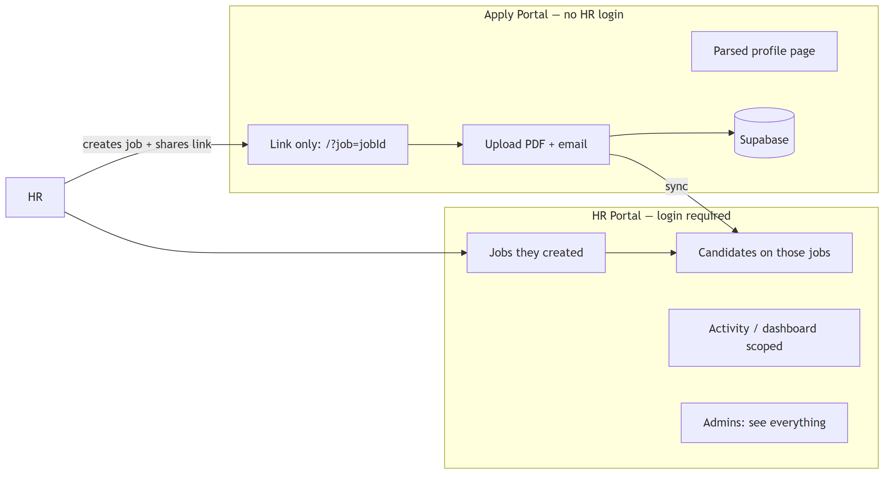
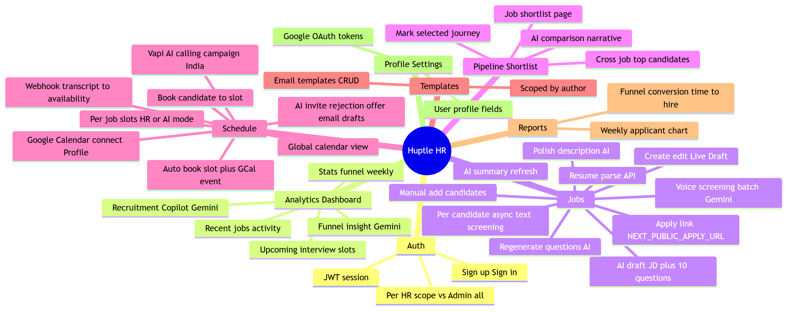
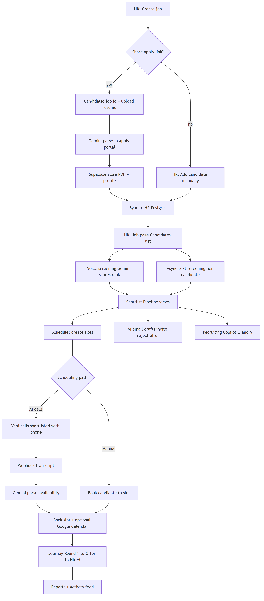
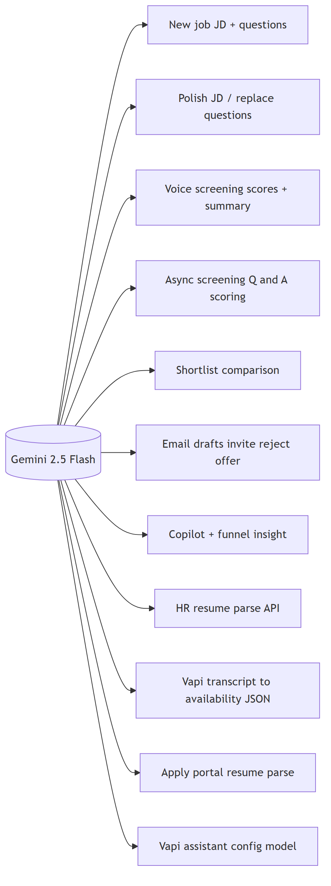
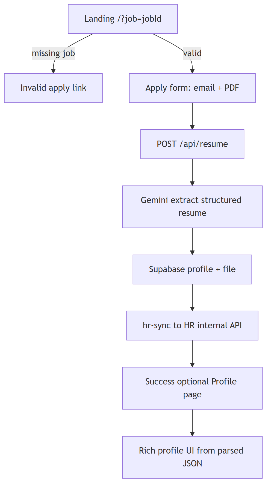
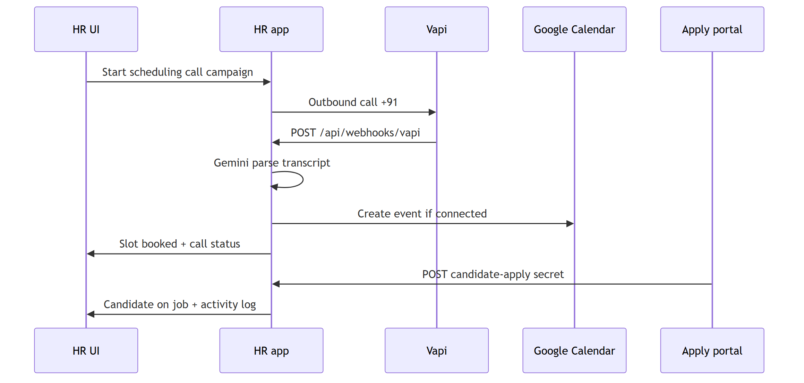
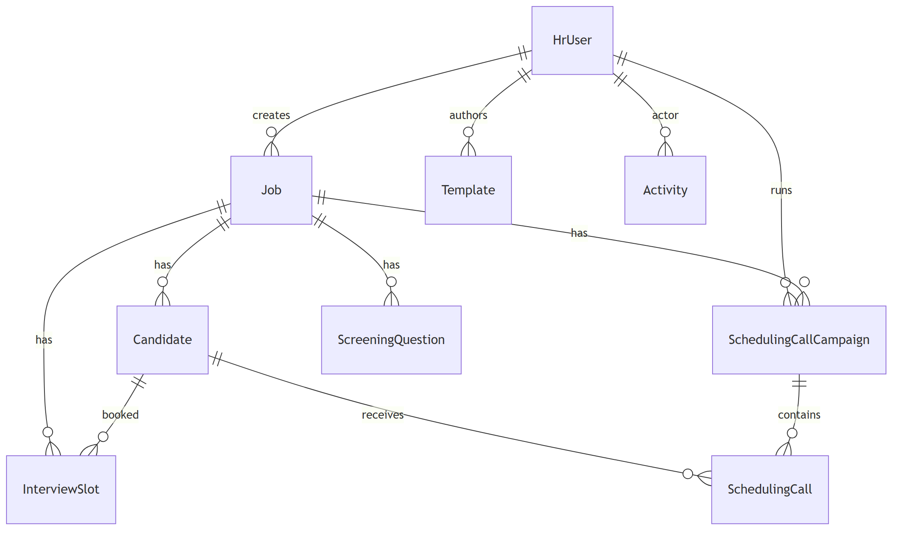
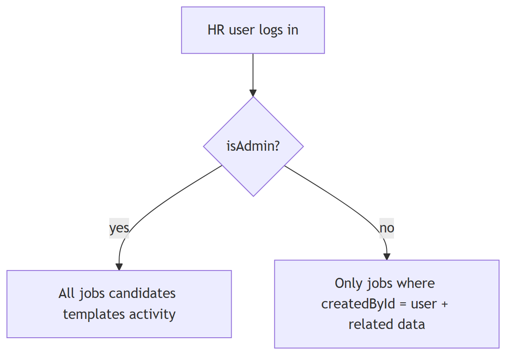
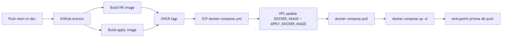

Application architecture, flows, and feature map
HR Portal + Candidate Apply Portal
Generated from Huptle HR-tech repository
Version: As of May 2026
Stack: Next.js HR portal, Next.js apply portal, PostgreSQL, Docker on VPS, GitHub Actions → GHCR

| Layer | Role |
|---|---|
HR portal (app) | Jobs, candidates, screening, scheduling, reports, templates |
Apply portal (apply) | Resume upload, parse, Supabase profile; syncs to HR |
| Postgres | Single source of truth for HR data |
| CI/CD | Build both images → GHCR → VPS docker compose pull |

Notes:
?job=…).


Candidate journey states (Candidate.journey):
Applied → Shortlisted → Round 1 / Round 2 / Round 3 → Offer Sent → Offer Accepted

Without GEMINI_API_KEY, voice screening uses simulated random scores so the UI remains usable.

Pages: apply home (/?job=), parsed profile (/profile). OTP APIs exist (/api/otp/send, /api/otp/verify).

| Integration | Check | Configuration |
|---|---|---|
| Gemini | GET /api/integrations/status | GEMINI_API_KEY, GEMINI_MODEL |
| Vapi | same | VAPI_*, public HTTPS webhook URL |
| Google Calendar | same | OAuth; requires HTTPS domain |
| Email send | not_configured | Drafts only — no SMTP wired |
| Candidate sync | env on both services | CANDIDATE_SYNC_SECRET, HR_PORTAL_INTERNAL_URL |

Candidate uniqueness: @@unique([jobId, email]) — re-apply with same email updates the row.


Typical ports: HR 3000, Apply 3002, dev HR 3001.
| App | Path | Purpose |
|---|---|---|
| HR | / | Dashboard + copilot |
| HR | /jobs, /jobs/[id] | Jobs, candidates, apply link |
| HR | /jobs/[id]/shortlist | Job shortlist |
| HR | /jobs/[id]/schedule | Slots + Vapi panel |
| HR | /jobs/[id]/async-screen/[candidateId] | Text screening |
| HR | /shortlist | Global pipeline |
| HR | /schedule | Global calendar |
| HR | /templates | Email templates |
| HR | /reports | Analytics |
| HR | /profile | Settings + Google connect |
| HR | /signin, /signup | Auth |
| Apply | /?job= | Apply form |
| Apply | /profile | Parsed resume view |
app)
DATABASE_URL, AUTH_SECRET
GEMINI_API_KEY, GEMINI_MODEL (e.g. gemini-2.5-flash)
CANDIDATE_SYNC_SECRET, NEXT_PUBLIC_APPLY_URL
VAPI_* (API key, assistant, phone, webhook secret)
GOOGLE_CLIENT_ID, GOOGLE_CLIENT_SECRET, NEXT_PUBLIC_APP_URL
DOCKER_IMAGE (set by CI on VPS)
apply)
GEMINI_API_KEY, Supabase URL + anon key
CANDIDATE_SYNC_SECRET
HR_PORTAL_INTERNAL_URL=http://app:3000 (Docker)
APPLY_DOCKER_IMAGE (set by CI on VPS)
1. HR creates job (Live or Draft).
2. HR copies apply link: {NEXT_PUBLIC_APPLY_URL}/?job={jobId}.
3. Candidate uploads PDF; Gemini parses skills, experience, contact info.
4. File stored in Supabase; profile row created.
5. Apply service POSTs to http://app:3000/api/integrations/candidate-apply with Bearer secret.
6. HR upserts Candidate on that jobId; activity logged for job owner.
7. HR runs voice or async screening, shortlists, schedules (manual or Vapi + Calendar).
*Generated from the Huptle HR-tech repository. Re-export this PDF after major feature changes.*